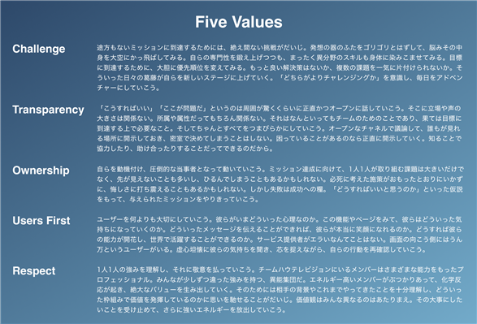

当社の経営方針、経営環境及び対処すべき課題等は、以下のとおりであります。
なお、文中の将来に関する事項は、当事業年度末現在において当社が判断したものであります。
(1) 経営方針
当社は、「全人類の能力を全面開花させ、世界を変える」ことをミッションステートメント（経営理念）としてキャリアプラットフォーム事業を展開しております。また、以下を当社が大切にしている５つの価値観（five values）と定義して、役職員全員が共有し日々の業務に臨んでおります。

(2) 経営上の目標の達成状況を判断するための客観的な指標等
当社は継続的な事業拡大と企業価値向上のため、売上高及び営業利益を重要指標としております。また、潜在的顧客層の認知拡大の観点から、累積取引社数及び累積会員数を重要な経営指標として重視しております。
(3) 経営環境
当社は、人材ビジネス市場を事業領域としており、新卒学生向けキャリアプラットフォーム「外資就活ドットコム」（新卒サービス）及び若手社会人向けリクルーティングプラットフォーム「Liiga」（中途サービス）の管理運営を通じたキャリアプラットフォーム事業を展開しております。
2024年１月期は、主に「顧客開拓」及び「顧客単価の向上」といった観点から事業を行ってまいりました。顧客開拓に関しては、既存顧客の満足度をカスタマーサクセスの拡充により高めることで継続率を向上させつつ、戦略的なマーケティング展開により新規顧客の獲得を進め、取引企業数の拡大を図ってまいりました。顧客単価に関しては、従前から顧客のジョブ型採用への移行を支援し、女性・理系採用特化商品などといった新商品を投入しておりましたが、顧客の採用課題を解決可能な商品ラインナップを拡充することにより顧客への提供価値を最大化することで単価向上を図ってまいりました。また、人員体制の強化とマーケティングに重点投資を行い、特に上半期においては従業員の採用活動や販売促進活動、広告宣伝といった投資活動を集中的に実施いたしました。
当社の事業領域である人材・就職支援業界においては、2023年12月の有効求人倍率が1.27倍（前年同月は1.36倍。厚生労働省調査）、完全失業率が2.4％（前年同月は2.5％。総務省統計局調査）を記録しております。有効求人倍率は若干の低下傾向にあるものの雇用環境は依然として売り手市場にあり、多くの業種・職種で人手不足の状況が続いております。また、株式会社リクルートが発表している「就職プロセス調査（2024年卒）」においては、2024年３月大学等卒業予定者の就職内定状況は、当該大学等卒業予定者の就職内定率が95.1％（2023年12月１日時点。前年同月は94.0％）と、前年度に引き続き高い水準となっております。2023年５月には政府により新型コロナウイルスの感染症法上の分類が引き下げられ社会全体が経済活動を後押しする体制となり、また、事業のDX化推進に伴うIT人材に対する企業需要の高まりやジョブ型採用の広がりなどにより市場全体の雇用環境や企業の採用戦略も総じてポジティブな状況にあり、特に専門性が高く優秀な人材に対する企業の需要は引き続き堅調に推移しております。
当社は、このような経営環境下においては、優秀な新卒学生の採用を企業間で競争する状況が促進され企業側が採用予算を多く確保する必要性が生じ、当社のサービスを展開していくにあたってもポジティブな材料になるものと考えております。
(4) 優先的に対処すべき事業上及び財務上の課題
当社が優先的に対処すべき事業上及び財務上の課題は、以下の項目と認識しております。
① 当社が提供するサービスの拡張及びコンテンツの充実
「(3) 経営環境」でも記載しましたとおり、当社は、キャリアプラットフォーム事業の領域において「外資就活ドットコム」及び「Liiga」を展開しております。これらのプラットフォームは、学生や若手社会人の就職活動・転職活動支援やキャリアアップ支援を目的としている一方、採用企業においては、学生や若手社会人にアプローチするための場としての機能も備えております。会員である学生・若手社会人に対しより一層のバリューを提供していくため、また、採用企業に対し一人でも優秀な人材と出会うことができる場であるため、当社は、「外資就活ドットコム」及び「Liiga」の継続的な拡張及びコンテンツの一層の充実が重要な経営課題であると認識しております。
当社は、このような経営課題に対応するため、システム開発やマーケティング等に必要な経営資源を確保し、今後も様々な新しいサービスやコンテンツをこれらのプラットフォーム内で展開してまいります。
② 「外資就活ドットコム」「Liiga」の認知度の向上
当社は、当社の事業規模拡大のためには、当社が管理運営する「外資就活ドットコム」及び「Liiga」のさらなる認知度の向上が必要不可欠であると考えておりますが、「外資就活ドットコム」及び「Liiga」における会員数及び取引社数は、大手の同業他社のサービスと比較しても、まだまだ拡大の余地があるものと認識しております。当社では今後インターネット広告を中心としたPR活動を効果的に実施するとともに、より多くのユーザーが当社の運営サイトに集まる体制の整備を進め、「外資就活ドットコム」「Liiga」の認知度の向上に積極的に取組んでまいります。
③ 優秀な人材の確保及び人材育成
当社は、今後のさらなる事業拡大を目指すうえで、システムの開発部門及び営業部門等における優秀な人材の確保及びその人材の育成が重要な課題であると認識しております。
人材の確保については、引き続き中途採用活動を実施し、当社のミッションステートメントに共感を持つ人材の採用を行ってまいります。人材の育成については、採用した人材のモチベーションを向上させる人事諸制度の構築を行うことで、最大限の実力を発揮できる組織体制の強化及び最適な人員配置を実施してまいります。
④ 社内管理体制の強化
当社は、今後のさらなる事業拡大のため、積極的な採用等により役職員を増加させていく方針ですが、組織規模の拡大に応じたさらなる社内管理体制の強化・充実が必要不可欠であります。そのため、管理部門の補強やシステムの強化を引き続き実施してまいります。
⑤ 技術革新への対応
当社が展開する事業の属する人材ビジネス市場は、近年の急速な技術革新の恩恵を受け、多角的なサービスが生まれ続けております。当社は、技術革新のスピードは今後も不可逆的に進行すると考えており、会員ファーストを念頭に置いた新サービスの展開を常に検討しております。今後の事業展開においても、こうした技術革新への積極的な対応は当社事業の成長に不可欠であり、最新の技術動向のフォロー、役職員への教育等を通じて、会員のニーズにマッチしたサービスの開発を継続してまいります。
当社のサステナビリティに関する考え方及び取組の状況は、次のとおりであります。
なお、文中の将来に関する事項は、有価証券報告書提出日現在において当社が合理的であると判断する一定の前提に基づいております。
(1）ガバナンス
当社は、企業の持続的な成長と中長期的な企業価値を創出するためのガバナンス体制を構築しており、サステナビリティ関連のリスク及び機会を監視し、管理するためのガバナンスに関しては、コーポレート・ガバナンス体制と同様となります。
当社のコーポレート・ガバナンスの状況の詳細は、「
(2）戦略
当社は「全人類の能力を全面開花させ、世界を変える」をミッションに掲げております。
当社のミッションに基づき、特に当社が大切にしている価値観を「５つの価値観（five values）」（詳細は「
以上のような当社のミッション及び事業展開は、国際連合が推進する「持続可能な開発目標（SDGs）」のうち、下記の項目に通じるものであり、当社の事業機会の拡大と価値あるサービスやプロダクトの創出を通じて、社会課題を解決することを目指しております。
|
（目指すべき世界観） ・人間の潜在力を完全に実現し、繁栄を共有することに資することができる平等な機会が与えられる世界 ・すべての国が持続的で、包摂的で、持続可能な経済成長と働きがいのある人間らしい仕事を享受できる世界
（持続可能な開発目標） 目標4. すべての人々への包摂的かつ公正な質の高い教育を提供し、生涯学習の機会を促進する 4.4 技術的・職業的スキルなど、雇用、働きがいのある人間らしい仕事及び起業に必要な技能を備えた若者と成人の割合を大幅に増加させる 目標8. 包摂的かつ持続可能な経済成長及びすべての人々の完全かつ生産的な雇用と働きがいのある人間らしい雇用(ディーセント・ワーク)を促進する 8.2 高付加価値セクターや労働集約型セクターに重点を置くことなどにより、多様化、技術向上及びイノベーションを通じた高いレベルの経済生産性を達成する。 8.3 生産活動や適切な雇用創出、起業、創造性及びイノベーションを支援する開発重視型の政策を促進する 8.5 若者や障害者を含むすべての男性及び女性の、完全かつ生産的な雇用及び働きがいのある人間らしい仕事、ならびに同一価値の労働についての同一賃金を達成する |
① 人的資本経営
当社は、社会的課題の解決に向け、事業機会の拡大と価値あるサービスやプロダクトの創出を目指しておりますが、これらの価値創造の活動を支える重要な資本として、当社が有する人的資本・プラットフォーム・経営基盤を一層強化・整備していくことが重要であると認識しております。その上で、当社における、人材の多様性の確保を含む人材の育成に関する方針及び社内環境整備に関する方針として、下記を掲げております。
・人材の多様性の確保と育成
当社は、ミッションに共感し、バリューを体現する人材を獲得・育成することが、当社の持続的な成長を実現するうえで欠かせないものと考えております。また、多様な人材を確保する上で、意識的に内集団バイアスを排除し、生物学的・社会的・地理的な多様性を維持するように努力しなければ、不確実性が高く将来予測が困難な時代を生き残れないものと認識しております。そのため、人材採用及び育成を事業戦略上の重要な経営課題に掲げて、採用担当部署の強化による採用活動の促進、リスキリングを含む人材育成と実務能力の向上を目的とした社内研修の充実に注力しております。
・従業員エンゲージメント
当社は、経験やスキルを身に付けた社員が長く働けるよう、仕事と生活の調和を図り、働きやすい雇用環境の整備に努めております。また従業員エンゲージメントを向上させるための様々な施策を実施しており、在職者に対しては、ミッション・バリューへの共感、職務満足度、社内環境、成長支援、評価制度、人間関係、福利厚生等の項目に渡るサーベイを定期的に行うことで状況を把握しております。退職者に対しては、エグジット・サーベイを実施することで、更なる従業員エンゲージメント向上のための施策を実施しております。
・労働慣行および従業員の健康と安全
当社は、柔軟な働き方の導入、時間外労働時間の低減、従業員向けの手厚い医療保険制度の導入、クラウドを活用した法定健診や産業医による健康管理、ストレスチェック等の導入により従業員が健康で安全に働き続けることができる支援を行っております。
② 気候変動への対応
当社は、環境に配慮した経営を実践しております。当社が展開するビジネスは、創業以来インターネットを主軸としたオンラインサービスの提供が中心となっており、有形固定資産等の保有も限定的なため、環境負荷が小さく温室効果ガス排出の抑制に貢献しております。また当社が提供しているサービスを通じて業界全体のDX化に貢献しており、さらなる環境負荷の低減を支援することができると考えております。
当社のオペレーションにおいては、リモートワークを含む柔軟な働き方を導入しており、電子契約や社内書類の電子化によるペーパーレス化により、ヒトやモノの移動、紙資源利用の削減が実現されています。加えて、エネルギー効率を意識した調達をはじめとする省エネ推進等の取組みを進めています。
当社は、現時点においては、極めて環境負荷が小さいビジネスモデル・事業規模であることを踏まえて、当社の各事業年度における温室効果ガス排出量のうち、Scope1（自社が直接排出する排出量）、Scope2（他社から供給された電気等の使用に伴う排出量）に関する目標値等は定めておりません。
(3）リスク管理
当社は、リスクの低減と事業機会の創出機会を着実に捉えるため、リスクの重要性を経営会議・取締役会等で定期的にモニタリングしております。また当社はリスク管理の統括機関としてリスク管理委員会を設置し、サステナビリティ関連を含むリスクについて識別・評価・管理しております。リスク管理委員会は代表取締役社長を委員長、コーポレート本部長を副委員長とし、当社のリスクの対応方針や課題について、優先度を選別・評価し、迅速な意思決定を図っております。
当社のリスク管理委員会については、「
機会管理においては、経営会議で重点テーマを管理しつつ、優先順位の設定とミッションに適う取り組みを推進する仕組みを構築し、戦略的な事業展開につなげています。
(4）指標及び目標
当社は、人的資本についての多様性確保の重要性を認識しております。
その上で、具体的な行動計画として、次世代育成支援対策推進法に基づき厚生労働省が省令で定める下記の定量指標を、一般事業主行動計画を策定し、単年度のみならず継続的に達成し続けることで、ワーク・ライフ・バランス等の推進を高い水準で積極的に推進する次世代育成支援企業としての認定（くるみん認定）を取得することを目指しております。
当該指標に関する当社の目標及び実績は次の通りです。
|
指標 |
目標 |
実績（当事業年度） |
|
男性の育児休業等取得率 |
30％以上 |
67％ |
|
女性の育児休業等取得率 |
75％以上 |
0％ |
なお当社は、従業員数が300人以下のため、当事業年度に育児休業等制度の利用者がいない場合には、当事業年度開始前３年間の実績を用いることが特例として認められております。
本書に記載した事業の状況、経理の状況等に関する事項のうち、経営者が会社の財政状態、経営成績及びキャッシュ・フローの状況に重要な影響を与える可能性があると認識している主要なリスクは、以下のとおりであります。
なお、文中の将来に関する事項は、本書提出日現在において当社が判断したものであります。
(1) インターネット関連市場について
当社はキャリアプラットフォーム事業を主力事業としておりますが、当社が管理運営する「外資就活ドットコム」、「Liiga」はインターネットを通じて顧客である採用企業等または会員等にサービスを提供しております。このため、当社事業の発展のためには、さらなるインターネット関連市場の拡大が必要であると考えております。とりわけインターネットにアクセスするための端末は、スマートフォンの普及及びIoTの進展により多様化の様相を見せております。
当社がこのようなインターネット関連市場の事業環境の変化に適切に対応できなかった場合、または、新たな法的規制等によりインターネット関連市場の成長が鈍化した場合、当社の事業展開及び業績に影響を及ぼす可能性があります。
(2) 四半期ごとの業績変動について
当社のキャリアプラットフォーム事業は、新卒学生の就職活動が本格化する時期や採用企業のインターンの募集の時期において登録会員・採用企業のトラフィックが増大し、また当社の収益もこの時期に大きく増加する傾向にあります。そのため、当社の売上高の成長は、年間を通じて平準化されずに、四半期決算の業績が著しく変動する可能性があります。
なお、2024年１月期における売上高及び営業損益は以下のとおりであります。
（単位：千円）
|
|
第１四半期会計期間 (自 2023年２月１日 至 2023年４月30日) |
第２四半期会計期間 (自 2023年５月１日 至 2023年７月31日) |
第３四半期会計期間 (自 2023年８月１日 至 2023年10月31日) |
第４四半期会計期間 (自 2023年11月１日 至 2024年１月31日) |
事業年度 (自 2023年２月１日 至 2024年１月31日) |
|
売上高 |
286,112 |
631,048 |
434,503 |
490,378 |
1,842,042 |
|
営業利益又は営業損失（△） |
△50,174 |
267,377 |
71,524 |
118,208 |
406,936 |
(3) 経営成績の変動について
当社の事業領域である人材ビジネス市場は、市場規模が緩やかな拡大を続けていながらも、競合環境、価格動向、景気変動とそれに伴う雇用情勢の変化やビジネスモデルの規制等の影響を受ける可能性があり、将来が不透明な部分が数多く存在します。
このような環境下において、当社は事業規模の拡大とサービスの多様化を図るため、これまでの当社の事業展開により培ったノウハウを活かして収益性の高い事業の創出に積極的に取り組んでおりますが、当社の想定以上に成果が上がらない場合や予測困難なコスト等の発生に伴い当社の事業計画を達成できない場合、当社の業績及び財政状態に影響を及ぼす可能性があります。
(4) 当社サービスの業績の達成確度に関する不確実性について
① 他社との競合について
当社は「外資就活ドットコム」及び「Liiga」の管理運営を通じたキャリアプラットフォーム事業を主たる事業領域としておりますが、当事業領域においては大手企業を始めとして多くの事業者が事業の展開をしております。当社は、ハイクラス人材の利用を想定したプラットフォームの構築、採用企業の厳選等に取り組み、これら多くの事業者が提供するサービスとの差別化を図っております。
しかしながら、当社と同様のサービスを展開する事業者との競合激化や、競合事業者が提供するサービスに対し十分な差別化が図れなかった場合、当社の事業展開及び業績に影響を及ぼす可能性があります。
② 特定のサービスへの依存について
当社のキャリプラットフォーム事業は、現在、特定のサービス「外資就活ドットコム」に大きく依存した事業となっております。当社は今後も「外資就活ドットコム」のコンテンツの価値向上に努めるとともに、「Liiga」などの他サービス・派生サービスを積極的に展開し、競合企業のサービスとの差別化を図ってまいりますが、上記①に記載のとおり、競合企業との競争激化等が、当社の事業展開及び業績に影響を及ぼす可能性があります。
③ 新規サービスについて
上記①のとおり、当社は「外資就活ドットコム」及び「Liiga」の管理運営を通じたキャリアプラットフォーム事業を主たる事業領域としておりますが、さらなる事業の拡大を目指し、継続的に新規サービスの開発に取り組んでおります。しかしながら、新規事業においては、追加的に開発費用や広告宣伝費等の先行投資が必要とされ、その結果当社の利益率の低下を招く可能性があります。また、新規事業には不透明な点が多く、先行投資額が想定を上回る場合があります。さらに、想定した収益が得られない場合、新規事業からの撤退という経営判断をする可能性もあります。このような場合、当社の事業展開及び業績に影響を及ぼす可能性があります。
④ 少子高齢化について
日本国内では少子高齢化が進んでおり、当社が提供するサービスを登録会員として利用すると想定される学生・若手社会人を始めとする若年層の数は緩やかに減少しております。
当社が提供するサービスは、学生や若手社会人のうち、キャリア形成に対する意欲が高い層をターゲットとしており、当該層については今後も一定程度の規模を維持していくものと想定されますが、ターゲット層が減少基調に陥った場合は、当社の事業展開及び業績に影響を及ぼす可能性があります。
⑤ 広告宣伝の効果について
当社事業にとって、事業の中核である「外資就活ドットコム」、「Liiga」の登録会員（新卒学生、若手社会人等）の増加は非常に重要な要素であり、インターネット等を通じたプロモーション活動により広告宣伝活動を積極的に実施し登録会員数の増加を図っております。
広告宣伝活動に関しては、当社が想定する登録会員の属性に可能な限りアプローチできるよう最適な施策を実施しておりますが、登録会員数の増加が、必ずしも当社の想定どおりに進捗しない可能性があります。この場合、当社の事業展開及び業績に影響を及ぼす可能性があります。
⑥ のれんの減損について
当社は、2024年４月１日に株式会社ログリオの全株式を取得いたしました。当該株式取得に伴い、現時点においては具体的な金額が確定しておりませんが、のれんが発生する見込みであります。当社は、当該のれんについて将来の収益力を適切に反映しているものと判断しておりますが、同社の将来の収益性が低下した場合には、当該のれんについて減損損失を計上する必要性が生じるため、当社の財政状態及び経営成績に重要な影響を及ぼす可能性があります。
なお、のれんの償却についてはその効果の及ぶ期間を見積り、その期間で償却していく方針であります。
(5) 社歴が浅いことについて
当社は2010年２月に設立されており、社歴の浅い会社であります。したがって、当社の過去の経営成績は期間業績比較を行うための十分な材料とはならず、過年度の業績のみでは、今後の業績を判断する情報としては不十分な可能性があります。
(6) 特定人物への依存について
当社の創業者であり代表取締役社長である音成洋介は、当社創業以来当社の事業に深く関与しており、当社の経営戦略の構築やその実行に際して重要な役割を担っております。当社は特定の人物に依存しない体制を構築すべく組織体制の強化を図っており、同氏に過度に依存しない経営管理体制の整備を進めておりますが、何らかの理由により同氏の業務執行が困難になった場合、当社の事業展開及び業績に影響を及ぼす可能性があります。
(7) 組織が少人数編成であることについて
本書提出日現在、当社は業務執行上必要最低限での人数の組織編成となっております。今後の事業拡大を見据え、優秀な人材の確保及び育成を行うとともに業務執行体制の充実を図っておりますが、これらの施策が適時適切に遂行されなかった場合、または、役職員等の予期せぬ退職があった場合、当社の事業展開及び業績に影響を及ぼす可能性があります。
(8) 内部管理体制について
当社は、今後の事業運営及び事業拡大に対応すべく、内部管理体制について一層の充実を図る方針であります。しかしながら、事業規模に適した内部管理体制の構築に遅延が生じた場合、当社の事業展開及び業績に影響を及ぼす可能性があります。
(9) 優秀な人材の確保及び育成について
当社の事業が継続的に成長していくためには、優秀な人材の確保、育成及び定着は経営上の重要な課題であります。当社は、必要な人材を確保するため十分な採用予算を確保し、また入社社員に対する研修の実施を通じ、当社の将来を担う優秀な人材の確保・育成に努め、社内研修やレクリエーション等を通じて役職員間のコミュニケーションを図ることで、定着率の向上を図っております。
しかしながら、必要な人材の採用が想定どおり進捗しない場合、採用し育成した役職員が当社の事業に寄与しなかった場合、あるいは育成した役職員が退職した場合には、当社の事業展開及び業績に影響を及ぼす可能性があります。
(10) 技術革新等について
当社が事業を展開している人材ビジネス市場においては、インターネットを始めとする様々な技術革新の恩恵を受けその方法論やサービスの提供方法等が大きく変わりつつあります。そのため、人材ビジネス市場におけるプレイヤーはその変化に柔軟に対応していく必要があります。当社においても、最新の技術動向や環境変化を常に把握できる体制を構築するのみならず、優秀な人材の確保及び教育等により技術革新や、会員・採用企業のニーズの変化に迅速に対応できるようつとめております。
しかしながら、当社が技術革新や会員・採用企業のニーズの変化に適時に対応できない場合、また、技術革新等の変化への対応のために設備投資や人件費等多くの費用の支出を要する場合、当社の事業展開及び業績に影響を及ぼす可能性があります。
(11) 当社サービスのシステムの安定性について
当社のキャリアプラットフォーム事業は、プラットフォームである「外資就活ドットコム」及び「Liiga」の管理運営を通じたサービスの提供が主たる収益の源泉となっており、上記プラットフォームのシステムの安定的な稼働が、当社の業務遂行上必要不可欠な要素となっております。そのため、当社はシステムの運営に不可欠な設備投資を実施するだけではなく、サーバー設備やネットワーク状況を常時監視し、障害の兆候が見られた場合には適時に対応が取られる体制を整備し、システム障害の発生を未然に防ぐことに努めております。
しかしながら、当社が予期しない上記プラットフォームへのアクセスの急増、コンピューターウイルスや人的な破壊行為、システム担当者の過誤、自然災害等の発生等によるサービスの中断ないしは停止により、当社が社会的信用を喪失した場合、当社の事業展開及び業績に影響を及ぼす可能性があります。
また、広告掲載等の売上計上にあたっての役務提供事実について社内システム（入稿管理システム）にて管理しており、これらの障害が発生したことにより、自動化された業務処理が実施されない場合には、正確に売上を計上できない等、当社の業績を適正に表示しない可能性があります。
(12) 不正アクセスについて
近年、特定の企業や団体を狙ったサイバー攻撃（情報システムへの不正アクセス）が頻発しております。当社は、これら不正アクセスによる被害を未然に防止するため、当社役職員が使用するパソコンのウイルス対策や情報システムのセキュリティ対策を実施しておりますが、万が一、不正アクセスにより被害を受けた場合、当社の事業展開及び業績に影響を及ぼす可能性があります。
(13) 訴訟等について
当社は、本書提出日現在において提起されている訴訟はありません。しかしながら、将来何らかの事由の発生により、訴訟等による請求を受ける可能性があります。このような事態が生じた場合、当社の社会的信用が毀損するほか、当社の事業展開及び業績に影響を及ぼす可能性があります。
(14) 知的財産権について
当社による第三者の知的財産権侵害の可能性については、適切な専門家と連携を図ること等により調査可能な範囲で対応を行っておりますが、当社の事業領域に関する第三者の知的財産権の完全把握は困難であり、当社の認識外において他社の知的財産権を侵害する可能性を完全に否定することはできません。この場合、使用差止請求や損害賠償請求等により、当社の事業展開及び業績に影響を及ぼす可能性があります。
(15) 個人情報保護について
当社では個人情報取扱事業者として多数のユーザー、取引先、従業員等の個人情報を保有しております。
当社では、法令や各種ガイドラインに基づいて、「個人情報保護規程」を定めて適切な管理を図るとともに、役職員への教育、システムのセキュリティ強化、個人情報取扱状況の内部監査等を実施し、個人情報管理の強化に努めております。また、当社の管理体制の十分性を継続的に担保するものとして、プライバシーマークの取得や情報漏洩保険への加入等を行っております。しかしながら、万が一個人情報の漏洩が発生した場合には、当社に対する損害賠償請求や社会的信用の失墜により、当社の事業展開及び業績に影響を及ぼす可能性があります。
(16) 法的規制について
当社は、当社が事業を展開するキャリアプラットフォーム事業において、人材紹介サービスを行っております。人材紹介事業は、職業安定法に基づき、有料職業紹介事業として厚生労働大臣の許可を必要とします。当社は、2022年11月１日から2027年10月31日の間での許可を受けており、適宜更新を行う方針であります。したがいまして、当該事業の運営に関して、現在は事業の継続に支障をきたす事象は発生しておりませんが、将来的に職業安定法第32条の９に定められた欠格事項等が判明した場合には、許可の取り消し、業務停止命令または業務改善命令の対象となるおそれがあります。それらが当社の事業運営に大きな支障をきたす結果、当社の事業展開及び業績に影響を及ぼす可能性があります。
(17) 配当政策について
当社は、株主に対する利益還元については重要な経営課題の一つとして認識しております。しかしながら、当社は現在成長段階にあり、より一層の内部留保の充実を図り、収益基盤の安定化・多様化や新規の投資にこれを充当することによりさらなる事業拡大を図ることが株主に対する最大の利益還元につながると考えております。
将来的には、その時点における経営成績及び財政状態を勘案しつつ株主に対し利益還元を実施していく方針ではありますが、現時点において配当実施の可能性及びその実施時期等については未定であります。
(18) 自然災害や感染症の発生について
当社ではリモートワーク制度を導入しているため、仮に自然災害が発生した場合や感染症の感染拡大局面においても、事業を継続できる体制を整備しております。
しかしながら、大規模な自然災害の発生や、重大な感染症の拡大に伴う外部環境の変化または企業の採用マインドの変化により、また、当社の役職員等が罹災または重大な感染症への感染等の事象が発生し、事業活動に支障が生じた場合には、当社の事業及び業績に影響を及ぼす可能性があります。
(1) 経営成績等の状況の概要
当事業年度における当社の財政状態、経営成績及びキャッシュ・フロー（以下「経営成績等」という。）の状況の概要は次のとおりであります。
① 財政状態及び経営成績の状況
当社の事業領域である人材・就職支援業界においては、2023年12月の有効求人倍率が1.27倍（前年同月は1.36倍。厚生労働省調査）、完全失業率が2.4％（前年同月は2.5％。総務省統計局調査）を記録しております。有効求人倍率は若干の低下傾向にあるものの雇用環境は依然として売り手市場にあり、多くの業種・職種で人手不足の状況が続いております。また、株式会社リクルートが発表している「就職プロセス調査（2024年卒）」においては、2024年３月大学等卒業予定者の就職内定状況は、当該大学等卒業予定者の就職内定率が95.1％（2023年12月１日時点。前年同月は94.0％）と、前年度に引き続き高い水準となっております。2023年５月には政府により新型コロナウイルスの感染症法上の分類が引き下げられ社会全体が経済活動を後押しする体制となり、また、事業のDX化推進に伴うIT人材に対する企業需要の高まりやジョブ型採用の広がりなどにより市場全体の雇用環境や企業の採用戦略も総じてポジティブな状況にあり、特に専門性が高く優秀な人材に対する企業の需要は引き続き堅調に推移しております。
このような事業環境の中、当社は引き続き積極的な顧客開拓及び顧客単価の向上を目指した施策を展開しております。顧客開拓に関しては、既存顧客の満足度をカスタマーサクセスの拡充により高めることで継続率を向上させつつ、戦略的なマーケティング展開により新規顧客の獲得を進め、取引企業数の拡大を図っております。顧客単価に関しては、従前から顧客のジョブ型採用への移行を支援し、女性・理系採用特化商品などといった新商品を投入しておりましたが、顧客の採用課題を解決可能な商品ラインナップを拡充することにより顧客への提供価値を最大化することで単価向上を図っております。このような地道な事業施策の展開によって、キャリアプラットフォーム事業の成長性は着実に押し上げられてきております。
当事業年度においては、人員体制の強化とマーケティングに重点投資を行い、特に上半期においては従業員の採用活動や販売促進活動、広告宣伝といった投資活動を集中的に実施いたしました。その一方で、コロナ禍においては積極的に取り組むことができなかったリアルイベントを多数開催することにより会員数の拡大を図り、加えて、上記のような顧客開拓や顧客単価に重点を置いた施策により新卒サービスにおける配信型商品であるスカウト機能の利用が顕著に増加するなど顧客との取引ボリュームが拡大し収益性が向上いたしました。また、戦略的な外部成長機会の観点から、株式会社Palettが発行する新株予約権の取得による投資を実行いたしました。
当社のキャリアプラットフォーム事業においては、「累積取引社数」及び「累積会員数」を重要な経営指標として定義しております。戦略的なマーケティング施策が奏功し、当事業年度末におけるキャリアプラットフォーム事業の累積取引社数は893社（前期末から97社増）に、また、累積会員数は525,064人（前期末から56,103人増）と、順調な伸長を継続しております。
以上の結果、当事業年度の売上高は1,842,042千円（前期比19.4％増）、営業利益は406,936千円（前期比2.7％増）、経常利益は404,861千円（前期比2.3％増）、当期純利益は300,621千円（前期比6.2％増）となっております。
なお、当社はキャリアプラットフォーム事業の単一セグメントであるため、セグメント別の記載は省略しております。
当事業年度末における流動資産は前事業年度末より759,856千円増加し、1,559,775千円となりました。主な増加要因は、現金及び預金の増加792,352千円によるものであります。
当事業年度末における固定資産は前事業年度末より42,548千円増加し、350,487千円となりました。主な増減要因は、無形固定資産の増加25,614千円、投資有価証券の増加20,000千円、償却の進行に伴う有形固定資産の減少6,677千円によるものであります。
当事業年度末における流動負債は前事業年度末より90,608千円増加し、449,777千円となりました。主な増減要因は、1年内返済予定の長期借入金の増加162,957千円、未払金の増加20,936千円、短期借入金の減少70,000千円、未払消費税等の減少22,572千円であります。
当事業年度末における固定負債は前事業年度末より406,811千円増加し、415,498千円となりました。主な増加要因は、長期借入金の増加406,777千円によるものであります。
当事業年度末における純資産は前事業年度末より304,984千円増加し、1,044,987千円となりました。主な増加要因は、当期純利益の計上に伴う利益剰余金の増加300,621千円であります。
以上の結果、特に多額の資金の借入れを行った影響により、当事業年度末における自己資本比率は54.7％（前事業年度末は66.7％）となりました。
② キャッシュ・フローの状況
当事業年度末における現金及び現金同等物（以下「資金」という。）は、前事業年度末に比べ792,352千円増加し、1,424,959千円となりました。
当事業年度における各キャッシュ・フローの状況とそれらの要因は次のとおりであります。
（営業活動によるキャッシュ・フロー）
当事業年度において営業活動により得られた資金は418,402千円（前期は468,630千円の獲得）となりました。主な収入要因は税引前当期純利益404,861千円、減価償却費90,237千円、売上債権の減少額26,269千円であり、主な支出要因は、法人税等の支払額116,992千円、未払消費税等の減少額22,572千円であります。
（投資活動によるキャッシュ・フロー）
当事業年度において投資活動により使用した資金は130,190千円（前期は69,157千円の使用）となりました。主な支出要因は、無形固定資産の取得による支出102,307千円、投資有価証券の取得による支出20,000千円であります。
（財務活動によるキャッシュ・フロー）
当事業年度において財務活動により得られた資金は504,139千円（前期は76,336千円の使用）となりました。主な収入要因は、長期借入れによる収入700,000千円であり、主な支出要因は、長期借入金の返済による支出130,266千円、短期借入金の純減額70,000千円であります。
③ 生産、受注及び販売の実績
ａ．生産実績
当社は生産活動を行っておりませんので、該当事項はありません。
ｂ．受注実績
当社は受注生産を行っておりませんので、該当事項はありません。
ｃ．販売実績
|
サービスの名称 |
前事業年度 （自 2022年２月１日 至 2023年１月31日） |
当事業年度 （自 2023年２月１日 至 2024年１月31日） |
||
|
販売額（千円） |
前期比（％） |
販売額（千円） |
前期比（％） |
|
|
外資就活ドットコム |
1,241,686 |
138.5 |
1,536,227 |
123.7 |
|
Liiga |
301,476 |
121.8 |
305,815 |
101.4 |
|
合計 |
1,543,162 |
134.9 |
1,842,042 |
119.4 |
（注）１．当社の事業セグメントは、キャリアプラットフォーム事業の単一セグメントであるため、サービス別の販売実績を記載しております。
２．主な相手先別販売実績は、総販売実績に対する割合が100分の10以上の相手先がいないため、省略しております。
(2) 経営者の視点による経営成績等の状況に関する分析・検討内容
経営者の視点による当社グループの経営成績等の状況に関する認識及び分析・検討内容は次のとおりであります。なお、文中の将来に関する事項は、本書提出日現在において判断したものであります。
① 財政状態及び経営成績の状況に関する認識及び分析・検討内容
経営成績等の状況に関する認識及び分析・検討内容については、「(1) 経営成績等の状況の概要 ① 財政状態及び経営成績の状況」及び「(1) 経営成績等の状況の概要 ② キャッシュ・フローの状況」に記載しております。また、当社の経営成績に影響を与える要因につきましては、「３ 事業等のリスク」に記載しているとおりであると認識しております。これらのリスクについては、適切なコントロールを行っていくとともに、万が一そのリスクが顕在化した場合にはしかるべき対応に努める所存であります。
② キャッシュ・フローの状況の分析・検討内容並びに資本の財源及び資金の流動性に係る情報
当社の運転資金需要のうち主なものは、キャリアプラットフォーム事業における事業運営のための人件費、外部協力者への報酬支払いであります。投資を目的とした資金需要のうち主なものは、キャリアプラットフォーム事業及び新規事業におけるシステム開発投資における人件費及び外部協力者への報酬支払い並びにキャリアプラットフォーム事業における知名度拡大及び会員獲得のための広告宣伝費であります。
当社の運転資金は、営業活動によって獲得した自己資金の充当を基本とし、資金需要等を考慮した上で外部資金調達手段として金融機関からの借入により調達することとしております。
資金の流動性管理にあたっては、適宜、資金繰り計画を作成・更新して手元流動性等をモニタリングするとともに、取引金融機関との当座貸越契約の締結、長期借入の実施等により、将来に渡り必要な資金流動性を確保できるよう計画しております。
③ 重要な会計上の見積り及び当該見積りに用いた仮定
当社の財務諸表は、わが国において一般に公正妥当と認められている会計基準に基づき作成されております。この財務諸表の作成に当たりまして、経営者による会計方針の選択・適用、資産・負債及び収益・費用の報告金額及び開示に影響を与える見積りを必要としております。これらは過去の実績等を勘案し合理的な判断のもとに見積りを行っておりますが、見積りによる不確実性のため、実際の結果は異なる場合があります。
当社の財務諸表で採用する重要な会計方針については「第５ 経理の状況 １ 財務諸表等 (1) 財務諸表 注記事項 重要な会計方針」に記載しております。
④ 経営成績に重要な影響を与える要因について
「３ 事業等のリスク」に記載をしましたとおり、当社は、市場環境の変化、業績の季節変動、競合他社との競争、特定人物への依存、少人数編成組織であること並びに優秀な人材の確保及び育成等、様々なリスク要因が当社の財政状態及び経営成績に重要な影響を与える可能性があるものと認識しております。
このため、当社は、当社が提供するサービスの拡張及びコンテンツの充実、当社サービスの認知度の向上、優秀な人材の確保及び育成並びに社内管理体制の強化等に積極的に取り組むことにより、財政状態及び経営成績に重要な影響を与えるリスク要因を低減させ、リスク要因に対して適切に対応していく所存であります。
⑤ 経営方針、経営戦略、経営上の目標の達成状況を判断するための客観的な指標等
経営方針、経営戦略、経営上の目標の達成状況を判断するための客観的な指標等については、「１ 経営方針、経営環境及び対処すべき課題等 （２）経営上の目標の達成状況を判断するための客観的な指標等」に記載のとおり、売上高及び営業利益を重要指標とし、また、潜在的顧客層の認知拡大の観点から、累積取引社数及び累積会員数を重要な経営指標として重視しております。
これらの点につきまして、2024年１月期は、引き続き増収増益決算を達成するとともに、累積取引社数及び累積会員数ともに前事業年度を上回る増加幅となりました。今後も継続的な増収及び潜在的顧客層の拡大を目指し、株主価値向上を目標とした経営施策を実施してまいります。
該当事項はありません。
該当事項はありません。